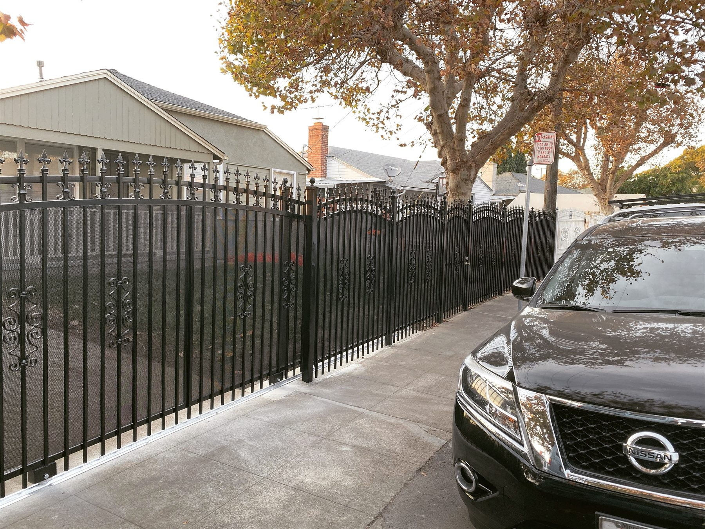
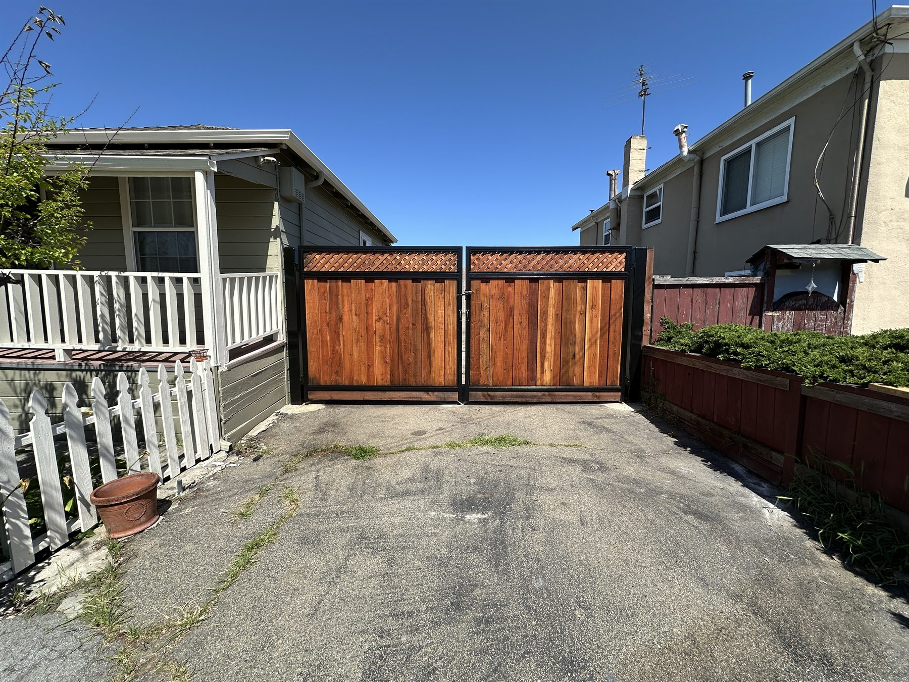

Front Fences and Entry Presence
Clean-looking front fences and gates that help the property feel finished, secure, and intentional.
- Decorative metal fencing
- Walk gates and entries
- Curb appeal upgrades
Oakland Fence Company
Pro Fence Company serves Oakland from our Hayward base with the kind of range that matters here: residential fence upgrades, rental-property durability, security-minded commercial work, and custom access solutions.
Oakland Projects
Good Fit Projects

Clean-looking front fences and gates that help the property feel finished, secure, and intentional.

Chain link is one of our strongest lanes for commercial lots, utility areas, and practical property control.

We also help Oakland clients who need targeted repairs, a stronger gate setup, or a full replacement that lasts longer.
Why Clients Call Us
Some Oakland clients are focused on presentation and curb appeal. Others care more about security, access, tenant durability, or clean replacement work. Pro Fence is built to handle that range.
Because we are based in Hayward and already work across the East Bay, Oakland clients can get responsive service with a crew that knows how to balance appearance, function, and durability.
Common Oakland Needs
Oakland FAQs
Yes. Oakland is clearly inside the 50-mile service area, and we regularly serve projects there.
Yes. Pro Fence handles both, from front-yard and backyard work to chain link security and larger perimeter layouts.
No. Repairs, gate fixes, section replacement, and smaller targeted improvements still fit the company well.
Oakland Fence Estimate